The deck UI · wide
Look after the printer
17Look after the printer
Machine has the information of the printer, the history of the prints, the macros, the console and the settings.
The Machine page

- 1InformationThe versions, the address and the totals.
- 2MaintenanceThe calibrations and the firmware.
- 3MacrosTap a macro to run it.
- 4ConsoleThe G-code console.
- 5Restart KlipperReads printer.cfg again.
- 6Firmware restartRestarts the board, for example after a stop.
Drag the list up to see more rows.
The Machine page, further down
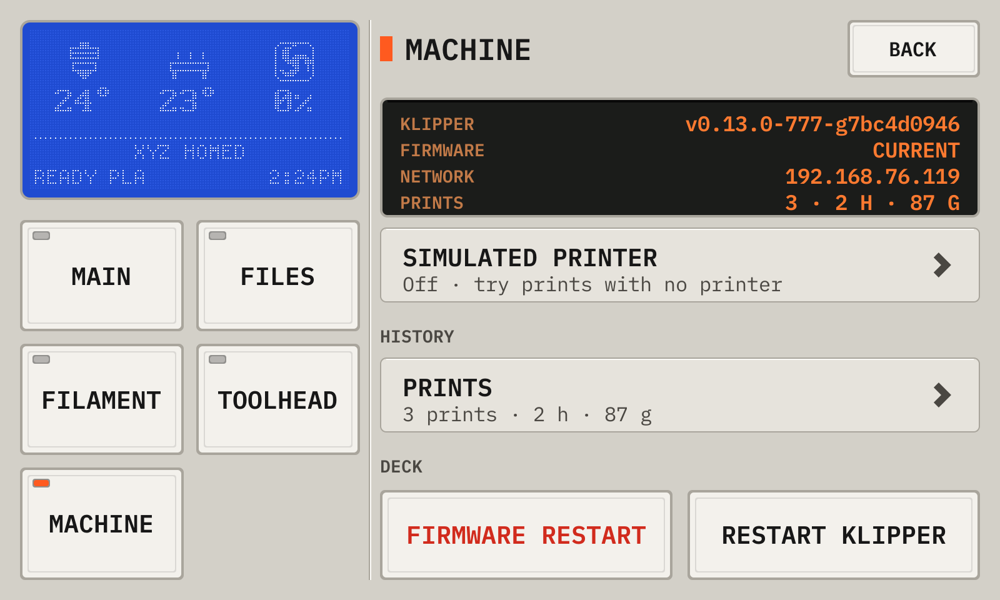
- 1Simulated printerRuns a simulated printer.
- 2PrintsThe totals and the history of all prints.
The Machine page, at the bottom
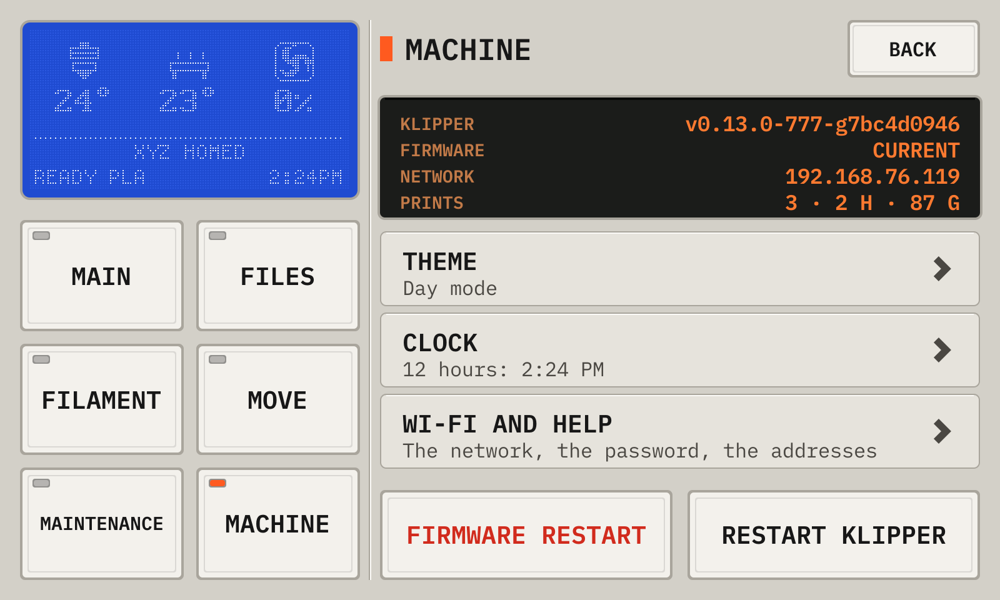
- 1SettingsThe theme, the clock, the screen, the cameras and the messages.
- 2Software updateShows and installs a new version.
- 3Wi-Fi and helpThe network, the password and the addresses.
- 4System monitorGraphs of the CPU, the memory and the SD card.
The Settings page
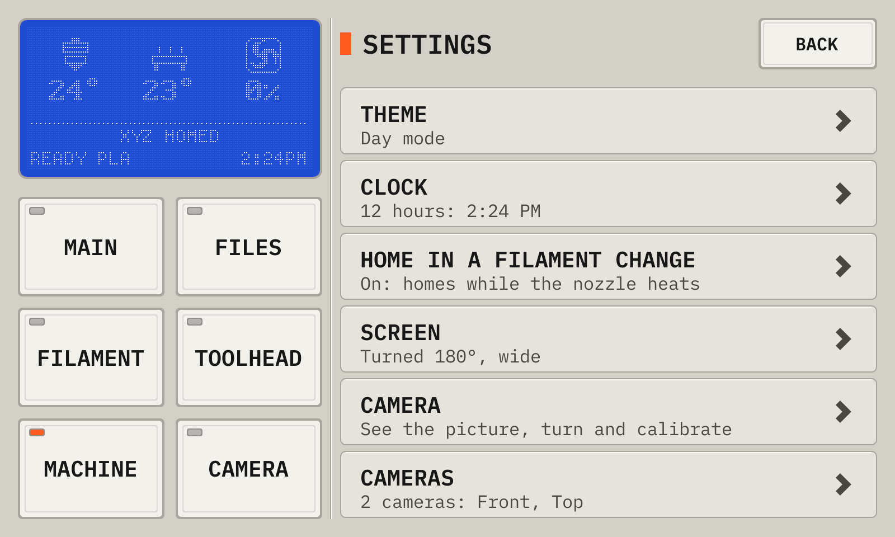
- 1ThemeDay, night, or auto.
- 2Clock12 or 24 hours.
- 3Home in a filament changeOn: the printer homes while the nozzle heats for a filament change.
- 4ScreenTap it to turn the screen a quarter turn. The deck restarts, and a print continues. This setting overrides display_rotate.
- 5CameraOpens the live picture, as the Camera key does.
- 6CamerasNames the cameras and sets their uses.
The Settings page, at the bottom
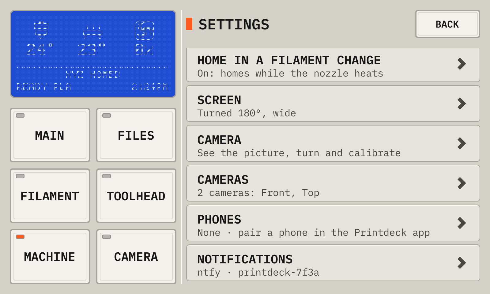
- 1PhonesThe phones that get push messages. Tap a phone in the list to remove it.
- 2NotificationsPush messages through ntfy. In the ntfy app, subscribe to a topic with a name that is hard to guess. Type the same topic here. An empty topic turns the messages off.
The Camera page
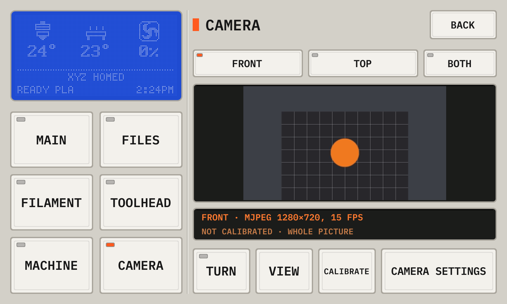
- 1TabsA tab for each camera that is on. Both shows all the cameras.
- 2PictureUse it to aim the camera at the bed.
- 3TurnTurns the picture 180°.
- 4Camera settingsThe name, on or off, and the uses of this camera.
A camera runs only while somebody looks at it. With no camera, the apps show the deck screen.
If a camera shows too little USB bandwidth, move it to another USB port.
The Cameras page
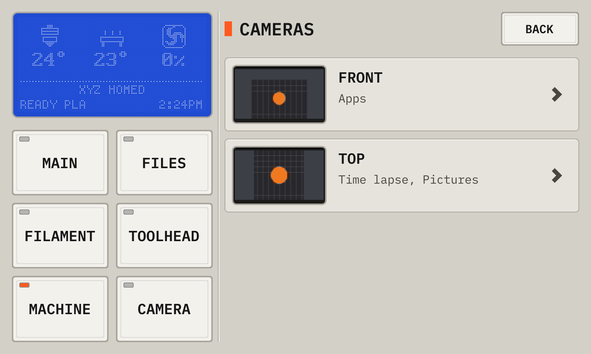
- 1FrontEach camera, with its uses. Tap a camera to change it.
The settings of one camera
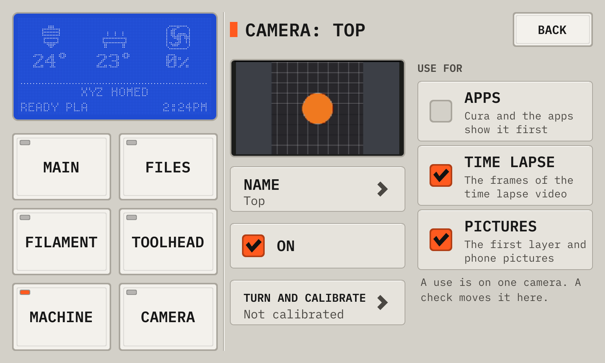
- 1NameType a name, such as Top.
- 2OnTurns the camera on or off. Its uses move to another camera.
- 3AppsCura and the apps show this camera first.
- 4Time lapseThe camera of the time lapse.
- 5PicturesThe first layer picture, and the pictures on the phone.
Each use is on one camera. To move a use, check it on the other camera.
Statistics

- 1TotalsThe prints, the success rate, the time and the filament.
- 2ResultsDone (amber), cancelled and failed (red).
- 3DetailsThe filament, the average and longest print, and the recent prints.
- 4HistoryEach print with its result. Tap a print to see it or print it again.
The console
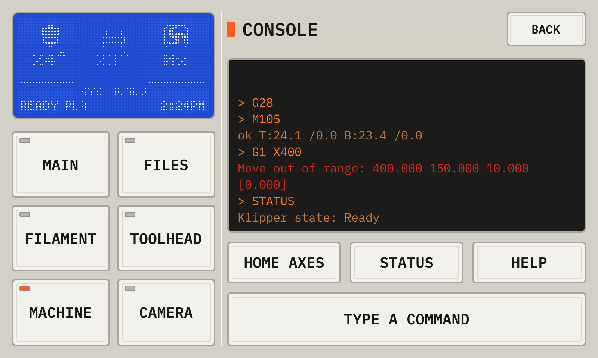
- 1RepliesYour commands, the replies, and errors in red.
- 2Type a commandOpens the keyboard.
- 3Quick keysHome (G28), Status (STATUS) and Help (HELP).
The System monitor
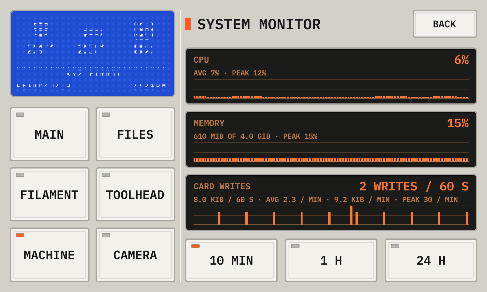
- 1CPUThe CPU use.
- 2MemoryThe memory in use.
- 3WritesThe SD card writes a minute.
- 41 h10 minutes, 1 hour or 24 hours.
The samples stay in memory. A restart clears them.
18Update the Printdeck
The deck checks for a new version once a day. Machine then shows Software update in orange.
The deck installs only a signed version. If the new system fails to start, the deck goes back to the old one.
- Open Machine, then Software update.
- Read the notes of the new version, then tap Install. The deck installs only when no print runs.
- Wait for the download. The deck restarts into the new version.
Software update
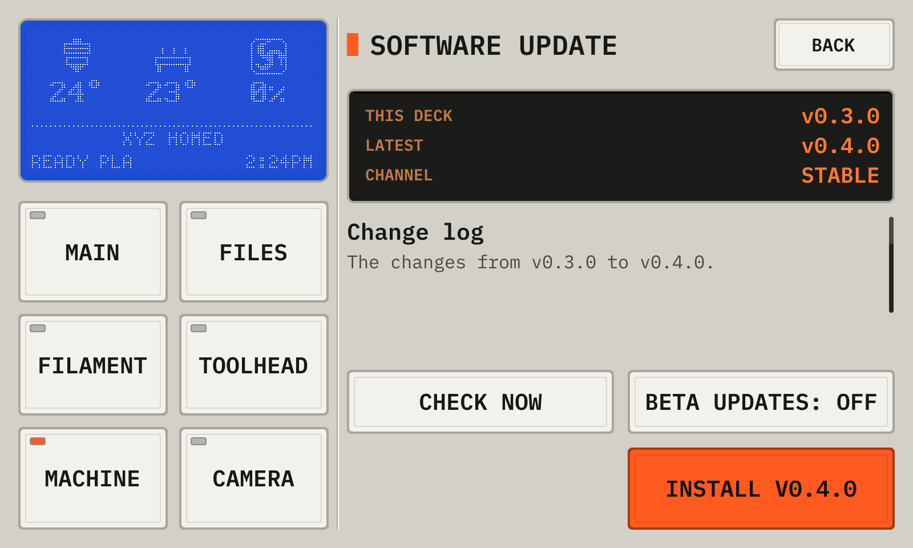
- 1VersionsThis version and the newest version.
- 2NotesWhat the new version changes.
- 3InstallInstalls the new version, after a question. The deck restarts.
- 4Check nowChecks for a new version now.
- 5Beta updatesOn: the deck also gets beta versions.
19Back up your data
A backup is one file with your rolls, history, settings, API keys, paired phones and Klipper config. Make a backup before you change the SD card.
Keep the backup password safe. Without it, no one can restore the backup.
The backup excludes the deck password and the Wi-Fi network.
- Open http://printdeck.local/system in a browser, and log in with the password of the deck.
- Under Backup, type a backup password of 8 characters or more, two times. To add the G-code files, select Include the G-code files.
- Click Download the backup. The browser saves a file with the name printdeck-backup-NAME-DATE.pdbk.
- To restore, open the same page when no print runs. Under Restore, type the backup password, choose the file, then click Restore.
- Klipper and the Printdeck restart. A wrong password or a damaged file changes no data.
20Try the deck with a simulated printer
The simulated printer heats, homes, probes and prints in real time, and no motor moves. Use it to learn the deck or to test a file.
Your printer.cfg stays as printer.cfg.real until you tap Real printer.
- Open Machine, then Simulated printer. The setup screen also has this key.
- Tap the printer to simulate, then Simulate. Klipper restarts with the simulated printer.
- Print as on a real printer: send a file from the slicer, or tap Print a file.
- To stop the simulation, open Machine, then Simulated printer, and tap Real printer, then Go back. Klipper restarts with your printer.cfg.
A simulated printer in use
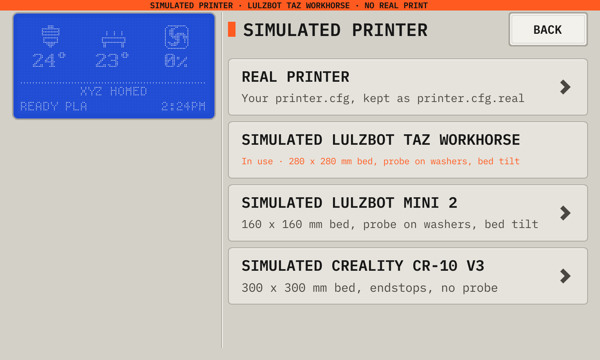
- 1SimulatedAn orange band shows a simulated printer.
- 2Real printerPuts your printer.cfg back and restarts Klipper.
- 3Simulated LulzBot TAZ WorkhorseA probe on four washers, and bed tilt. Here it is in use.
- 4Simulated LulzBot Mini 2A probe on four washers, and bed tilt.
- 5Simulated Creality CR-10 V3Endstops on each axis, and no probe.
The deck changes the printer only when no print runs.
From the manual for a wide display. The deck draws every picture.